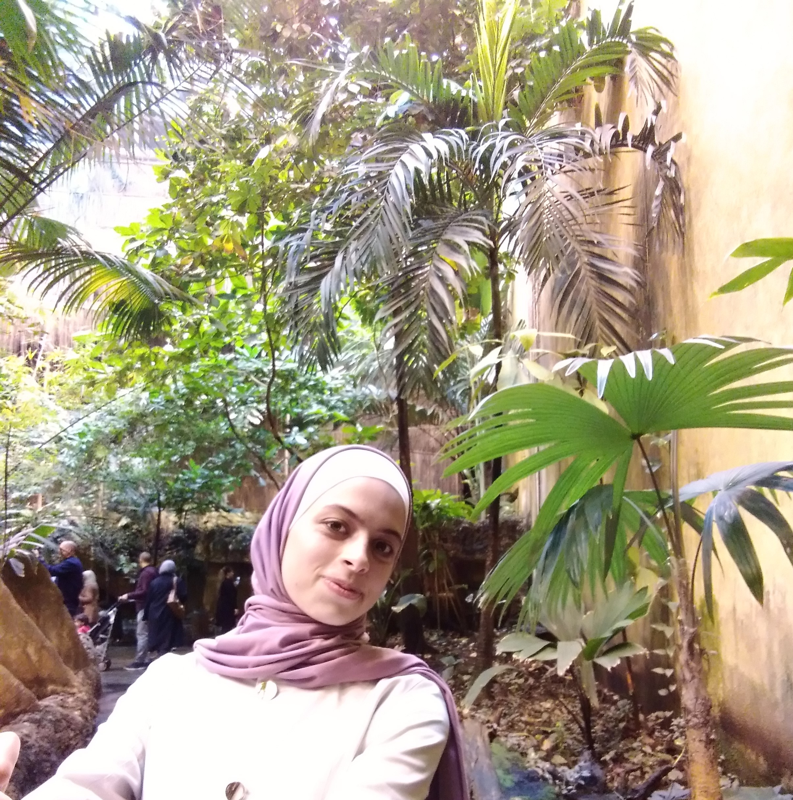

BIOGRAPHY
Iam jaleeleh alqasrawi acomputer engineer i was borned in jordan at 1992/NOV, i finshed my primry education in baghdad-iraq then i continued my secondary school in amman-joradn and i got 92.8 average in tawjihi then i joined the hashemite university,majoring in Computer engineering,i gradute at 2015 but unfotunatly i didnt work because all companies need experience ;therefor i joined to asac programming course to qualify me for the job market.
EDUCATION HISTORY
- I am in-process tech training for a full stack web development intensive course in Software Development which is provided by Abdul Aziz Ghurair School of Advanced Computing (ASAC) in collaboration with Code Fellows Academy in Seattle – US.
- I Have studied abachelor degree of Computer engineering at hashemite university.
MY GOALS:
- To be aprofessional web programmer and to work as afree lancer
- To create a unique website or application thats useful for people
TOP TEN COUNTRIES TO VISIT
- mecca
- moroco
- south africa
- sangafora
- greek
- egypt
- italy
- lebanon
- france
- canada

JORDAN-AMMAN-juwideh
Gmail:jaleeleha@gmail.com
phone number:0798990413